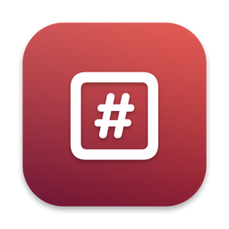

BatesmarkSupport
Answers to common questions are below. If yours isn’t, email help@fitztoppicks.com with your Mac model and macOS version.
Using Batesmark
Are my original PDFs changed?
No. Batesmark only reads them and writes stamped copies to the output folder you choose, and it never replaces a file that is already there.
A PDF is marked “Won’t be stamped: Password-protected”.
Batesmark never removes a password, and a stamped copy can’t keep the PDF’s restrictions, so it leaves that file out (the index says skipped: password-protected). If you’re allowed to, open it in Preview, choose File › Export without the Encrypt option (or remove the password in Acrobat), and add the new copy.
Batesmark license
What’s free, and what does a key add?
Without a key you can stamp the first 25 pages of a Bates series with every option, the preview and the production index, for as long as you like. A key adds productions of any size, numbering that continues from one production to the next, a privilege log template and saved presets, on up to 3 Macs. It’s a one-time purchase on Gumroad, with no subscription.
Where do I enter my license key?
Choose Batesmark › Settings…, open the Pro tab, paste the key from your Gumroad receipt and click Activate.
How do I get updates?
Batesmark checks for updates on its own; you can also choose Check for Updates… from the Batesmark menu. Updates are free.
Purchases
How do I get a refund?
Gumroad handles payment. Reply to your Gumroad receipt or email help@fitztoppicks.com.
Do I have to pay again on another Mac?
No. One license key works on up to 3 of your Macs. Download the app again from your Gumroad receipt or library and enter the same key.